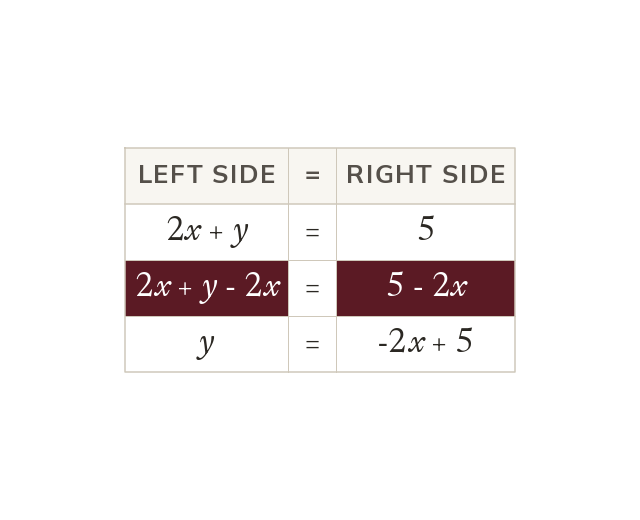

Rearrange into y = mx + c
Rearrange 2x + y = 5 into y = mx + c before drawing it. Take 2x from both sides, as when solving.
An equation like 2x + y = 5 is rearranged into y = mx + c before it is drawn. Take 2x from both sides, just as when solving an equation.